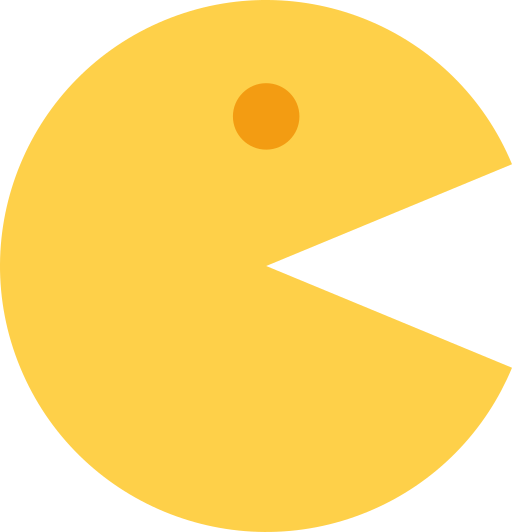

PacMan
CHASE THE ENERGY,
NOT THE GHOST!
Original Pac-Man
👻 Pac-Man ist eine echte Ikone der Arcade-Spiele, die 1980 erstmals in Japan erschien und sofort die Herzen von Millionen Spielern weltweit eroberte. Die gelbe Spielfigur mit offenem Mund bewegt sich durch ein Labyrinth, sammelt Punkte und weicht den bunten Geistern aus.
Jeder Geist hat seinen eigenen Charakter:
👻 Blinky (rot) — der Jäger, folgt dir immer;
👻 Pinky (pink) — schlau, versucht deinen Weg vorherzusehen;
👻 Inky (cyan) — unvorhersehbar und strategisch klug;
👻 Clyde (orange) — faul und zufällig, manchmal läuft er vor dir weg.
Das Ziel des Spiels ist einfach: alle Punkte im Labyrinth zu essen. Doch mit jedem Level werden die Geister schneller und intelligenter. Es gibt Energiekugeln, die Pac-Man die Möglichkeit geben, die Geister für kurze Zeit zu fressen — ein strategischer Moment des Erfolgs!
Pac-Man ist nicht nur ein Spiel, sondern ein kulturelles Phänomen. Filme, Serien, Musik und Merchandise wurden inspiriert von dieser Legende. Der Slogan „CHASE THE ENERGY, NOT THE GHOST!" zeigt den Geist des Spiels: Bewege dich vorwärts, weiche Gefahren aus und verfolge dein Ziel.
Besuche die offizielle Pac-Man-Website, um mehr über die Geschichte des Spiels, klassische Versionen und moderne Adaptionen zu erfahren.

Originale Website von PacMan